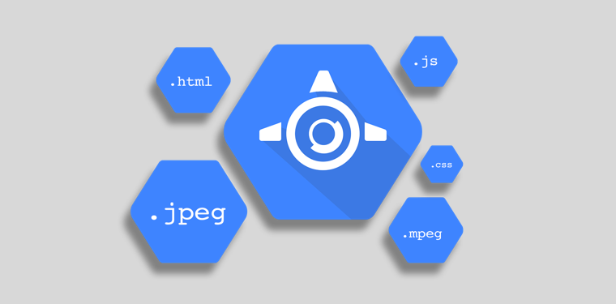

Mockup of Airbnb's responsive homepage menu design from February 2016. This pen includes a regular menu with a sub-menu dropdown for desktop views and a fly-out overlay navigation for smaller devices. The technologies used in building this include BEM, Scss & jQuery.
See the Pen Airbnb's Homepage Menu with BEM and Sass by Brandon Rukin (@brandonrukin) on CodePen.
Whenever I need a free easy way to show off a design in progress to a client or test a website concept, I use host the site with Google App Engine. I learned how to do this in my first web technologies class at GWU, our first assignment was to create a resume and host it via GAE.

Mockup of the responsive story grid on Digg's website from January 2016. The technologies I used in this pen are BEM, PostCSS and the Lost Grid System. I'm a daily Digg reader and big fan of the website's minimal design.
See the Pen Digg's Story Section with PostCSS and Lost Grid by Brandon Rukin (@brandonrukin) on CodePen.